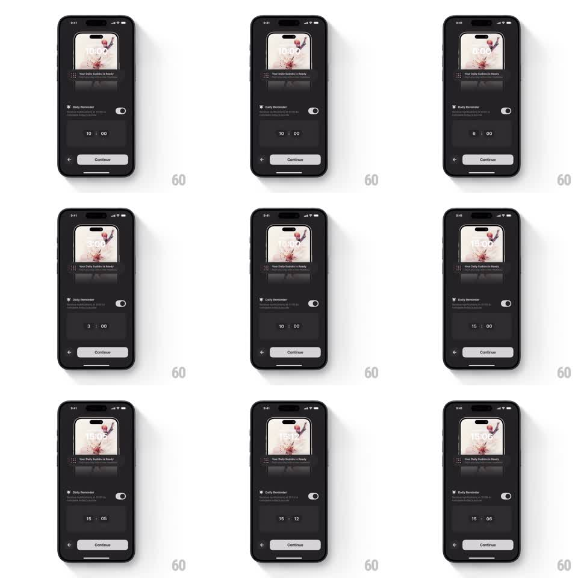

Media
Frame-by-frame

Rebuild this interaction 1:1: Sudoku a Day's reminder time picker - scrolling the hour and minute wheels updates a live lock-screen notification preview at the top in real time.

Rebuild this interaction 1:1: Sudoku a Day's reminder time picker - scrolling the hour and minute wheels updates a live lock-screen notification preview at the top in real time. ## Integration Integration: stack-agnostic spec - springs given as stiffness/damping, timed motions as duration + curve; map every value to your framework and animation library of choice. ## Scene Dark screen. Top: a lock-screen preview card - wallpaper thumbnail, a large clock reading the picked time, and a "Your Daily Sudoku is Ready" notification banner. Below: a "Daily Reminder" row with the toggle on, then the picker: two adjacent wheels showing hour and minute (e.g. "10 : 06") with a colon between, dimmed values above and below the selected row. Bottom: back chevron and a white Continue button. ## Motion spec Pattern: dual-wheel picker with a synchronized live preview. - Each wheel scrolls with 1:1 finger tracking, rubber-banding past its ends, and decelerates with momentum before snapping to the nearest value (spring ~320/30). - The selected row is bright white; neighbors fade to 30% and shrink slightly (scale 0.85) toward the edges with a subtle vertical mask. - On every snap (and continuously while dragging), the preview clock above crossfades to the new time (150ms) - 10:00 becomes 6:00, 3:00, 15:00, 15:06 as the wheels move. - The notification banner under the preview clock stays fixed; only the time digits change. ## Calibration - Wheels wrap hours 0-23 and minutes 0-59; the colon stays static between them. - Preview update must feel instantaneous - it is the whole point of the screen. ## Reduced motion Wheel scroll snaps without momentum; preview time swaps without crossfade. ## Don't miss - The preview is a mini lock screen, not a plain label: wallpaper, big clock, notification card. - Dimmed wheel values use a vertical fade mask, not a hard clip.